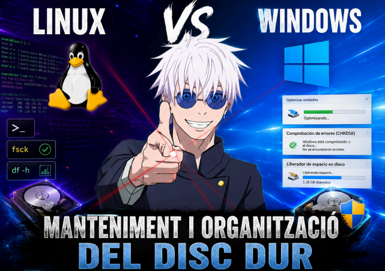
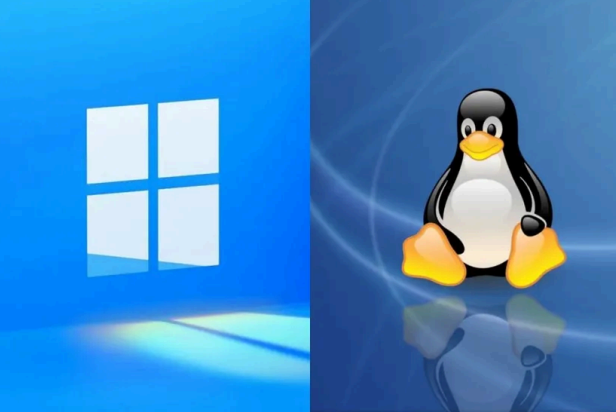
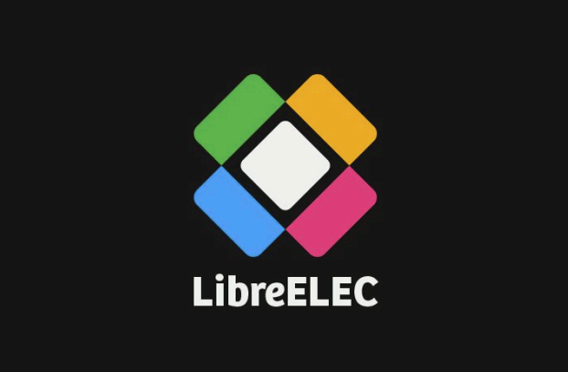
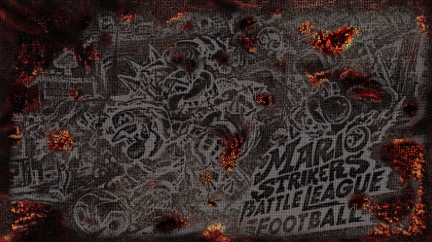
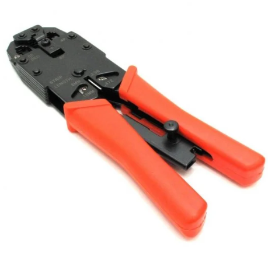
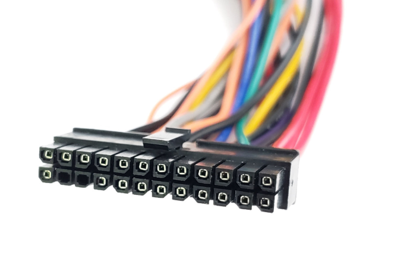

Portfoli de Projectes
Una selecció de treballs i pràctiques destacades que he realitzat durant el curs de primer any de la meva formació a BemenFP. Cada projecte reflecteix competències clau adquirides en diferents mòduls tècnics.

Manteniment i Organització de Disc
Gestió de l'espai d'emmagatzematge, particionament segur de disc en sistemes de fitxers ext4 i NTFS, organització lògica de la informació i manteniment preventiu del sistema d'arxius.

Diagnòstic i Salut del Disc (Disk Health)
Estudi del rendiment físic de les unitats d'emmagatzematge, monitoratge dinàmic de sectors lògics, velocitat de transferència de dades i anàlisi de paràmetres crítics S.M.A.R.T.

Projecte Multimèdia: Duel de Centres
Estudi comparatiu integral de diferents entorns de formació professional, ràtios acadèmiques i sortides professionals maquetades en una presentació gràfica d'alt rigor.

Edició i Retoc d'Imatges Digitals
Treball pràctic de manipulació gràfica digital, desfer fons de mapa de bits, retocs cromàtics i ajustos de resolució, incloent projectes de Wario i Mario Strikers editats.

Taller de Cablejat de Xarxa
Disseny, pelat, ordenació de cables sota la norma i crimpatge físic de connectors RJ45 de coure per a xarxes locals, comprovat mitjançant tester de continuïtat LAN.

Mapa de Colors i Connectors
Treball d'estudi teòric i diagramació gràfica del pinout segons les normes T568A i T568B per a l'acoblament de connectors RJ45, realitzat en col·laboració amb un company de classe.